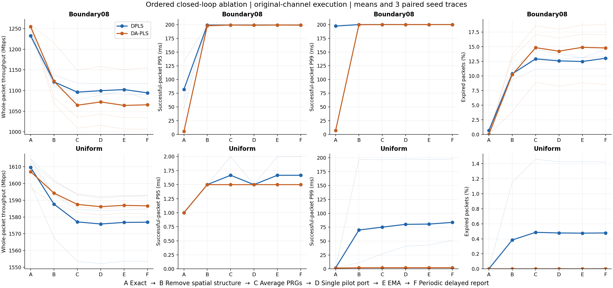
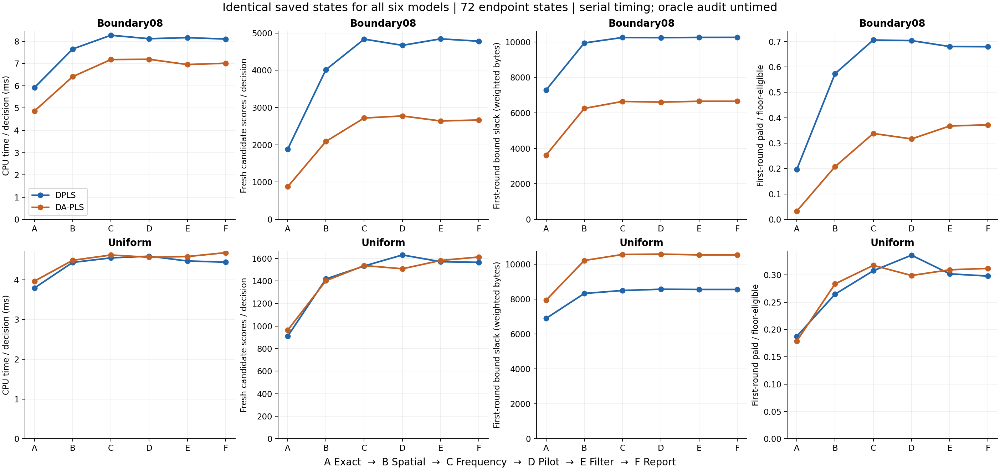
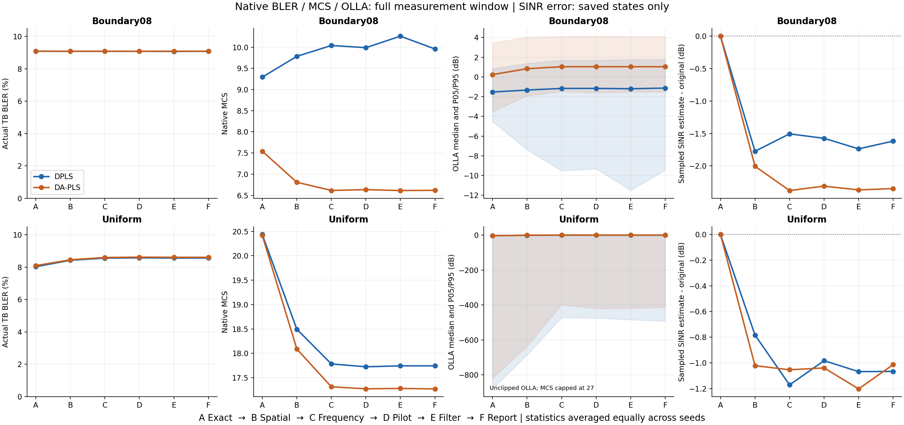

2026-11-10 · 三小区 Boundary08 / Uniform · DPLS / DA-PLS · seeds 41–43
72 条正式轨迹：48 条新增闭环消融，24 条已验证端点复用。各条测量 10 秒，执行端始终使用原始瞬时信道。 采用逐级消融；相邻差值是给定加入顺序下的条件效果，不是顺序无关的独立贡献。正负变化均保留。
代码核对：原版输入是含路径损耗／阴影及逐 TTI 相关 Rayleigh 快衰落的复信道 H，干扰使用逐 UE／PRG／邻区的 H Hᴴ， 并非只有大尺度增益。冻结原生源中的 rho=0.9938、rhoPrime=0.0786 及随机递推代码已收录在代码证据文件中。
| 阶段 | 评价端 | 相对前一步的变化 |
|---|---|---|
| A | 原始瞬时协方差 | 原版瞬时分源 H Hᴴ；执行和评价模型一致 |
| B | 逐PRG等功率各向同性 | 每 UE／PRG／邻区保留 trace，改成 trace(H Hᴴ)/4 × I₄ |
| C | 全端口宽带功率 | 再把该功率在 PRG 之间平均；仍用全部 TX 端口 |
| D | 单参考端口当前功率 | 改成单参考端口的当前宽带功率；单独隔离端口采样差异 |
| E | 单端口滤波功率（即时可用） | 加入 100 ms 因果 EMA，每 TTI 立即可用 |
| F | 滤波＋周期上报／延迟 | 再加入 10 ms 周期上报和 0.5 ms 传输延迟；等于原 RSRP 版本 |
额外拆出单端口采样，避免把原 RSRP 实现使用 TX 端口 0、而原协方差使用全部端口带来的差异误归到时间滤波。 最后一步包含周期保持和传输延迟，不能把该差值全部归因于 0.5 ms 延迟。空间、频域步骤使用原始信道构造理想控制量，不是可直接部署的测量接口。

相邻吞吐差值中的正数表示改善；时延与过期率差值中的正数表示变差。百分比均以同算法原版吞吐为分母；它们可沿本路径相加，但不代表通用、可交换的损失份额。
本场景包 TTL 为 200 ms。成功包 P95/P99 接近该上限后，进一步的服务恶化可能主要表现为过期率增加，不能仅凭尾时延趋平判断“没有额外损失”。
| scene | algorithm | factor | stage | control | throughput_delta_mbps | throughput_delta_pct_of_exact | p95_delta_ms | p99_delta_ms | expiry_delta_pp | serial_cpu_delta_ms | throughput_ci_low | throughput_ci_high |
|---|---|---|---|---|---|---|---|---|---|---|---|---|
| boundary | DPLS | 空间协方差丢失 | spatial | exact | -111.743 | -9.064 | 117.333 | 2.667 | 9.686 | 1.735 | -129.137 | -94.350 |
| boundary | DPLS | 频域平均 | frequency | spatial | -25.018 | -2.029 | 0.000 | 0.000 | 2.554 | 0.618 | -44.108 | -5.929 |
| boundary | DPLS | 单参考端口采样 | pilot | frequency | 3.623 | 0.294 | 0.000 | 0.000 | -0.333 | -0.155 | -13.584 | 20.830 |
| boundary | DPLS | 时间滤波 | filtered | pilot | 2.667 | 0.216 | 0.000 | 0.000 | -0.106 | 0.049 | -11.888 | 17.223 |
| boundary | DPLS | 周期上报与传输延迟 | reported | filtered | -7.986 | -0.648 | 0.000 | 0.000 | 0.559 | -0.064 | -36.610 | 20.637 |
| boundary | DA-PLS | 空间协方差丢失 | spatial | exact | -132.290 | -10.543 | 192.500 | 192.833 | 10.219 | 1.545 | -321.838 | 57.259 |
| boundary | DA-PLS | 频域平均 | frequency | spatial | -58.010 | -4.623 | 1.333 | 0.167 | 4.622 | 0.768 | -79.778 | -36.241 |
| boundary | DA-PLS | 单参考端口采样 | pilot | frequency | 7.902 | 0.630 | -0.333 | 0.000 | -0.603 | 0.012 | 5.293 | 10.511 |
| boundary | DA-PLS | 时间滤波 | filtered | pilot | -8.370 | -0.667 | 0.333 | 0.000 | 0.655 | -0.237 | -10.114 | -6.626 |
| boundary | DA-PLS | 周期上报与传输延迟 | reported | filtered | 1.454 | 0.116 | -0.167 | 0.000 | -0.102 | 0.060 | -5.484 | 8.391 |
| uniform | DPLS | 空间协方差丢失 | spatial | exact | -21.914 | -1.361 | 0.500 | 68.167 | 0.385 | 0.644 | -45.923 | 2.094 |
| uniform | DPLS | 频域平均 | frequency | spatial | -10.597 | -0.658 | 0.167 | 5.167 | 0.102 | 0.114 | -18.157 | -3.036 |
| uniform | DPLS | 单参考端口采样 | pilot | frequency | -1.234 | -0.077 | -0.167 | 5.000 | -0.008 | 0.042 | -2.752 | 0.283 |
| uniform | DPLS | 时间滤波 | filtered | pilot | 0.922 | 0.057 | 0.167 | 0.500 | -0.003 | -0.120 | -0.511 | 2.356 |
| uniform | DPLS | 周期上报与传输延迟 | reported | filtered | 0.149 | 0.009 | 0.000 | 3.018 | 0.003 | -0.030 | -0.606 | 0.903 |
| uniform | DA-PLS | 空间协方差丢失 | spatial | exact | -12.788 | -0.796 | 0.500 | 0.500 | 0.000 | 0.525 | -24.154 | -1.422 |
| uniform | DA-PLS | 频域平均 | frequency | spatial | -6.736 | -0.419 | 0.000 | 0.167 | 0.000 | 0.133 | -10.277 | -3.195 |
| uniform | DA-PLS | 单参考端口采样 | pilot | frequency | -1.338 | -0.083 | 0.000 | 0.000 | 0.000 | -0.055 | -2.416 | -0.259 |
| uniform | DA-PLS | 时间滤波 | filtered | pilot | 0.796 | 0.050 | 0.000 | 0.000 | 0.000 | 0.017 | 0.066 | 1.526 |
| uniform | DA-PLS | 周期上报与传输延迟 | reported | filtered | -0.315 | -0.020 | 0.000 | 0.000 | 0.000 | 0.098 | -1.374 | 0.744 |
下表保留最终 RSRP 与原版端点对照；计算开销来自新的同状态串行复测，而不是混用并发运行时间。
| scene | algorithm | throughput_change_pct | p95_original_ms | p95_reported_ms | p99_original_ms | p99_reported_ms | expiry_original_pct | expiry_reported_pct | serial_cpu_original_ms | serial_cpu_reported_ms | serial_cpu_change_pct | paid_scoring_change_pct | first_round_paid_original | first_round_paid_reported | first_slack_original | first_slack_reported |
|---|---|---|---|---|---|---|---|---|---|---|---|---|---|---|---|---|
| boundary | DPLS | -11.231 | 82.000 | 199.333 | 197.333 | 200.000 | 0.673 | 13.033 | 5.918 | 8.099 | 36.873 | 153.767 | 298.778 | 1036.389 | 7287.265 | 10256.299 |
| boundary | DA-PLS | -15.088 | 5.500 | 199.167 | 7.000 | 200.000 | 0.000 | 14.791 | 4.865 | 7.014 | 44.170 | 204.700 | 54.167 | 638.722 | 3616.750 | 6655.104 |
| uniform | DPLS | -2.030 | 1.000 | 1.667 | 1.833 | 83.685 | 0.000 | 0.478 | 3.794 | 4.445 | 17.135 | 72.052 | 193.278 | 308.389 | 6892.472 | 8550.158 |
| uniform | DA-PLS | -1.268 | 1.000 | 1.500 | 1.500 | 2.167 | 0.000 | 0.000 | 3.966 | 4.683 | 18.080 | 67.450 | 174.056 | 313.222 | 7936.419 | 10522.476 |
| scene | objective | stage | payload_mbps | goodput_mbps | delay_mean_ms | delay_p95_ms | delay_p99_ms | outcome_p95_ms | expiry_pct | success_pct | other_nondelivery_pct | queue_mean_mb |
|---|---|---|---|---|---|---|---|---|---|---|---|---|
| boundary | DPLS | 原始瞬时协方差 | 1232.802 | 1292.437 | 12.895 | 82.000 | 197.333 | 169.333 | 0.673 | 89.157 | 10.170 | 2.333 |
| boundary | DPLS | 逐PRG等功率各向同性 | 1121.058 | 1197.620 | 61.131 | 199.333 | 200.000 | 200.000 | 10.359 | 81.075 | 8.565 | 12.906 |
| boundary | DPLS | 全端口宽带功率 | 1096.040 | 1172.309 | 66.556 | 199.333 | 200.000 | 200.000 | 12.913 | 79.266 | 7.821 | 14.271 |
| boundary | DPLS | 单参考端口当前功率 | 1099.663 | 1174.410 | 65.709 | 199.333 | 200.000 | 200.000 | 12.580 | 79.528 | 7.892 | 14.072 |
| boundary | DPLS | 单端口滤波功率（即时可用） | 1102.330 | 1176.868 | 64.761 | 199.333 | 200.000 | 200.000 | 12.474 | 79.721 | 7.805 | 13.913 |
| boundary | DPLS | 滤波＋周期上报／延迟 | 1094.344 | 1171.220 | 67.337 | 199.333 | 200.000 | 200.000 | 13.033 | 79.143 | 7.824 | 14.412 |
| boundary | DA-PLS | 原始瞬时协方差 | 1254.737 | 1312.356 | 2.807 | 5.500 | 7.000 | 5.500 | 0.000 | 90.744 | 9.256 | 0.343 |
| boundary | DA-PLS | 逐PRG等功率各向同性 | 1122.447 | 1210.446 | 120.685 | 198.000 | 199.833 | 199.667 | 10.219 | 81.172 | 8.609 | 21.826 |
| boundary | DA-PLS | 全端口宽带功率 | 1064.438 | 1160.285 | 128.248 | 199.333 | 200.000 | 200.000 | 14.841 | 76.977 | 8.182 | 23.642 |
| boundary | DA-PLS | 单参考端口当前功率 | 1072.339 | 1165.496 | 127.789 | 199.000 | 200.000 | 200.000 | 14.238 | 77.548 | 8.214 | 23.495 |
| boundary | DA-PLS | 单端口滤波功率（即时可用） | 1063.970 | 1160.285 | 128.309 | 199.333 | 200.000 | 200.000 | 14.893 | 76.943 | 8.164 | 23.658 |
| boundary | DA-PLS | 滤波＋周期上报／延迟 | 1065.423 | 1161.217 | 128.037 | 199.167 | 200.000 | 200.000 | 14.791 | 77.048 | 8.161 | 23.600 |
| uniform | DPLS | 原始瞬时协方差 | 1609.581 | 1625.184 | 0.609 | 1.000 | 1.833 | 1.167 | 0.000 | 93.188 | 6.812 | 0.012 |
| uniform | DPLS | 逐PRG等功率各向同性 | 1587.666 | 1612.512 | 1.817 | 1.500 | 70.000 | 1.667 | 0.385 | 91.919 | 7.697 | 0.435 |
| uniform | DPLS | 全端口宽带功率 | 1577.070 | 1604.977 | 1.781 | 1.667 | 75.167 | 1.833 | 0.487 | 91.305 | 8.208 | 0.464 |
| uniform | DPLS | 单参考端口当前功率 | 1575.835 | 1603.760 | 1.929 | 1.500 | 80.167 | 1.833 | 0.478 | 91.234 | 8.288 | 0.493 |
| uniform | DPLS | 单端口滤波功率（即时可用） | 1576.758 | 1604.810 | 1.888 | 1.667 | 80.667 | 1.833 | 0.476 | 91.287 | 8.237 | 0.482 |
| uniform | DPLS | 滤波＋周期上报／延迟 | 1576.906 | 1604.826 | 1.974 | 1.667 | 83.685 | 1.833 | 0.478 | 91.296 | 8.226 | 0.501 |
| uniform | DA-PLS | 原始瞬时协方差 | 1607.027 | 1622.057 | 0.605 | 1.000 | 1.500 | 1.000 | 0.000 | 93.040 | 6.960 | 0.010 |
| uniform | DA-PLS | 逐PRG等功率各向同性 | 1594.239 | 1617.012 | 0.665 | 1.500 | 2.000 | 1.500 | 0.000 | 92.299 | 7.701 | 0.018 |
| uniform | DA-PLS | 全端口宽带功率 | 1587.503 | 1612.824 | 0.689 | 1.500 | 2.167 | 1.500 | 0.000 | 91.909 | 8.091 | 0.021 |
| uniform | DA-PLS | 单参考端口当前功率 | 1586.166 | 1611.521 | 0.688 | 1.500 | 2.167 | 1.500 | 0.000 | 91.832 | 8.168 | 0.021 |
| uniform | DA-PLS | 单端口滤波功率（即时可用） | 1586.962 | 1612.482 | 0.688 | 1.500 | 2.167 | 1.500 | 0.000 | 91.878 | 8.122 | 0.021 |
| uniform | DA-PLS | 滤波＋周期上报／延迟 | 1586.646 | 1612.168 | 0.689 | 1.500 | 2.167 | 1.500 | 0.000 | 91.860 | 8.140 | 0.021 |
对全部 UE／邻区等权计算。空间误差为归一化协方差 Frobenius 误差；其余为相邻功率近似的 dB 差。 这些不同量纲的误差用于描述信息变化，不能直接换算为吞吐损失份额。
| scene | spatial_covariance_relative_frobenius_error | weakest_eigenvalue_over_mean | strongest_eigenvalue_over_mean | prg_power_cv | report_age_tti | frequency_power_bias_db | frequency_power_mae_db | single_port_power_bias_db | single_port_power_mae_db | filter_power_bias_db | filter_power_mae_db | report_hold_delay_power_bias_db | report_hold_delay_power_mae_db | filtered_vs_current_all_port_power_bias_db | filtered_vs_current_all_port_power_mae_db | reported_vs_current_all_port_power_bias_db | reported_vs_current_all_port_power_mae_db |
|---|---|---|---|---|---|---|---|---|---|---|---|---|---|---|---|---|---|
| boundary | 0.676 | 0.062 | 2.447 | 0.239 | 19.667 | 0.130 | 0.856 | -0.009 | 0.338 | 0.024 | 0.333 | -0.001 | 0.031 | 0.015 | 0.268 | 0.015 | 0.277 |
| uniform | 0.675 | 0.062 | 2.448 | 0.240 | 19.667 | 0.131 | 0.856 | 0.009 | 0.344 | 0.004 | 0.347 | -0.002 | 0.033 | 0.012 | 0.265 | 0.010 | 0.276 |
空间消融保留了每 UE／PRG／邻区的瞬时干扰总功率，却把各接收方向的功率填成相同值。 共同信道样本中，单邻区协方差最弱特征值约为平均特征值的 0.062 倍，最强约为 2.45 倍；各向同性替代会填高原先较弱的干扰方向，改变 MMSE 抑制收益。 这给出了空间误差导致 SINR 偏差的具体机制，但偏差仍取决于服务信号方向，不能推导每个 UE／动作都必然偏保守。 阶段 B 尚无任何频域或时间平均，因此它相对 A 的损失不能归因于 100 ms 滤波。
滤波的条件效果可以为正：单参考端口的瞬时功率并不等于全部发射端口的当前平均功率。 在共同信道样本上，以后者为参照，单端口即时功率 MAE 约 0.34 dB，滤波后约 0.27 dB；平滑可降低端口采样波动，同时带来时间滞后。 这只解释可能的抵消机制，净吞吐和尾时延效果以闭环相邻差值为准。
n=3，无多重比较修正；区间跨零不表示等价。
| scene | objective | stage | control | factor | metric | n | mean_delta | ci_low | ci_high |
|---|---|---|---|---|---|---|---|---|---|
| boundary | deficit | filtered | pilot | 时间滤波 | payload_mbps | 3 | 2.667 | -11.888 | 17.223 |
| boundary | deficit | filtered | pilot | 时间滤波 | delay_p95_ms | 3 | 0.000 | 0.000 | 0.000 |
| boundary | deficit | filtered | pilot | 时间滤波 | delay_p99_ms | 3 | 0.000 | 0.000 | 0.000 |
| boundary | deficit | filtered | pilot | 时间滤波 | expiry_pct | 3 | -0.106 | -1.239 | 1.027 |
| boundary | deficit | frequency | spatial | 频域平均 | payload_mbps | 3 | -25.018 | -44.108 | -5.929 |
| boundary | deficit | frequency | spatial | 频域平均 | delay_p95_ms | 3 | 0.000 | 0.000 | 0.000 |
| boundary | deficit | frequency | spatial | 频域平均 | delay_p99_ms | 3 | 0.000 | 0.000 | 0.000 |
| boundary | deficit | frequency | spatial | 频域平均 | expiry_pct | 3 | 2.554 | 0.481 | 4.626 |
| boundary | deficit | pilot | frequency | 单参考端口采样 | payload_mbps | 3 | 3.623 | -13.584 | 20.830 |
| boundary | deficit | pilot | frequency | 单参考端口采样 | delay_p95_ms | 3 | 0.000 | 0.000 | 0.000 |
| boundary | deficit | pilot | frequency | 单参考端口采样 | delay_p99_ms | 3 | 0.000 | 0.000 | 0.000 |
| boundary | deficit | pilot | frequency | 单参考端口采样 | expiry_pct | 3 | -0.333 | -1.401 | 0.735 |
| boundary | deficit | reported | filtered | 周期上报与传输延迟 | payload_mbps | 3 | -7.986 | -36.610 | 20.637 |
| boundary | deficit | reported | filtered | 周期上报与传输延迟 | delay_p95_ms | 3 | 0.000 | 0.000 | 0.000 |
| boundary | deficit | reported | filtered | 周期上报与传输延迟 | delay_p99_ms | 3 | 0.000 | 0.000 | 0.000 |
| boundary | deficit | reported | filtered | 周期上报与传输延迟 | expiry_pct | 3 | 0.559 | -1.413 | 2.531 |
| boundary | deficit | spatial | exact | 空间协方差丢失 | payload_mbps | 3 | -111.743 | -129.137 | -94.350 |
| boundary | deficit | spatial | exact | 空间协方差丢失 | delay_p95_ms | 3 | 117.333 | 4.898 | 229.769 |
| boundary | deficit | spatial | exact | 空间协方差丢失 | delay_p99_ms | 3 | 2.667 | 1.232 | 4.101 |
| boundary | deficit | spatial | exact | 空间协方差丢失 | expiry_pct | 3 | 9.686 | 7.445 | 11.927 |
| boundary | mlwdf_pf | filtered | pilot | 时间滤波 | payload_mbps | 3 | -8.370 | -10.114 | -6.626 |
| boundary | mlwdf_pf | filtered | pilot | 时间滤波 | delay_p95_ms | 3 | 0.333 | -0.384 | 1.050 |
| boundary | mlwdf_pf | filtered | pilot | 时间滤波 | delay_p99_ms | 3 | 0.000 | 0.000 | 0.000 |
| boundary | mlwdf_pf | filtered | pilot | 时间滤波 | expiry_pct | 3 | 0.655 | 0.462 | 0.847 |
| boundary | mlwdf_pf | frequency | spatial | 频域平均 | payload_mbps | 3 | -58.010 | -79.778 | -36.241 |
| boundary | mlwdf_pf | frequency | spatial | 频域平均 | delay_p95_ms | 3 | 1.333 | -3.369 | 6.036 |
| boundary | mlwdf_pf | frequency | spatial | 频域平均 | delay_p99_ms | 3 | 0.167 | -0.550 | 0.884 |
| boundary | mlwdf_pf | frequency | spatial | 频域平均 | expiry_pct | 3 | 4.622 | 3.284 | 5.959 |
| boundary | mlwdf_pf | pilot | frequency | 单参考端口采样 | payload_mbps | 3 | 7.902 | 5.293 | 10.511 |
| boundary | mlwdf_pf | pilot | frequency | 单参考端口采样 | delay_p95_ms | 3 | -0.333 | -1.050 | 0.384 |
| boundary | mlwdf_pf | pilot | frequency | 单参考端口采样 | delay_p99_ms | 3 | 0.000 | 0.000 | 0.000 |
| boundary | mlwdf_pf | pilot | frequency | 单参考端口采样 | expiry_pct | 3 | -0.603 | -0.678 | -0.528 |
| boundary | mlwdf_pf | reported | filtered | 周期上报与传输延迟 | payload_mbps | 3 | 1.454 | -5.484 | 8.391 |
| boundary | mlwdf_pf | reported | filtered | 周期上报与传输延迟 | delay_p95_ms | 3 | -0.167 | -0.884 | 0.550 |
| boundary | mlwdf_pf | reported | filtered | 周期上报与传输延迟 | delay_p99_ms | 3 | 0.000 | 0.000 | 0.000 |
| boundary | mlwdf_pf | reported | filtered | 周期上报与传输延迟 | expiry_pct | 3 | -0.102 | -0.544 | 0.340 |
| boundary | mlwdf_pf | spatial | exact | 空间协方差丢失 | payload_mbps | 3 | -132.290 | -321.838 | 57.259 |
| boundary | mlwdf_pf | spatial | exact | 空间协方差丢失 | delay_p95_ms | 3 | 192.500 | 187.086 | 197.914 |
| boundary | mlwdf_pf | spatial | exact | 空间协方差丢失 | delay_p99_ms | 3 | 192.833 | 192.116 | 193.550 |
| boundary | mlwdf_pf | spatial | exact | 空间协方差丢失 | expiry_pct | 3 | 10.219 | -3.383 | 23.822 |
| uniform | deficit | filtered | pilot | 时间滤波 | payload_mbps | 3 | 0.922 | -0.511 | 2.356 |
| uniform | deficit | filtered | pilot | 时间滤波 | delay_p95_ms | 3 | 0.167 | -0.550 | 0.884 |
| uniform | deficit | filtered | pilot | 时间滤波 | delay_p99_ms | 3 | 0.500 | -2.786 | 3.786 |
| uniform | deficit | filtered | pilot | 时间滤波 | expiry_pct | 3 | -0.003 | -0.017 | 0.011 |
| uniform | deficit | frequency | spatial | 频域平均 | payload_mbps | 3 | -10.597 | -18.157 | -3.036 |
| uniform | deficit | frequency | spatial | 频域平均 | delay_p95_ms | 3 | 0.167 | -0.550 | 0.884 |
| uniform | deficit | frequency | spatial | 频域平均 | delay_p99_ms | 3 | 5.167 | -18.148 | 28.481 |
| uniform | deficit | frequency | spatial | 频域平均 | expiry_pct | 3 | 0.102 | -0.337 | 0.542 |
| uniform | deficit | pilot | frequency | 单参考端口采样 | payload_mbps | 3 | -1.234 | -2.752 | 0.283 |
| uniform | deficit | pilot | frequency | 单参考端口采样 | delay_p95_ms | 3 | -0.167 | -0.884 | 0.550 |
| uniform | deficit | pilot | frequency | 单参考端口采样 | delay_p99_ms | 3 | 5.000 | -14.402 | 24.402 |
| uniform | deficit | pilot | frequency | 单参考端口采样 | expiry_pct | 3 | -0.008 | -0.065 | 0.048 |
| uniform | deficit | reported | filtered | 周期上报与传输延迟 | payload_mbps | 3 | 0.149 | -0.606 | 0.903 |
| uniform | deficit | reported | filtered | 周期上报与传输延迟 | delay_p95_ms | 3 | 0.000 | 0.000 | 0.000 |
| uniform | deficit | reported | filtered | 周期上报与传输延迟 | delay_p99_ms | 3 | 3.018 | -8.909 | 14.946 |
| uniform | deficit | reported | filtered | 周期上报与传输延迟 | expiry_pct | 3 | 0.003 | -0.018 | 0.023 |
| uniform | deficit | spatial | exact | 空间协方差丢失 | payload_mbps | 3 | -21.914 | -45.923 | 2.094 |
| uniform | deficit | spatial | exact | 空间协方差丢失 | delay_p95_ms | 3 | 0.500 | 0.500 | 0.500 |
| uniform | deficit | spatial | exact | 空间协方差丢失 | delay_p99_ms | 3 | 68.167 | -204.897 | 341.231 |
| uniform | deficit | spatial | exact | 空间协方差丢失 | expiry_pct | 3 | 0.385 | -1.270 | 2.039 |
| uniform | mlwdf_pf | filtered | pilot | 时间滤波 | payload_mbps | 3 | 0.796 | 0.066 | 1.526 |
| uniform | mlwdf_pf | filtered | pilot | 时间滤波 | delay_p95_ms | 3 | 0.000 | 0.000 | 0.000 |
| uniform | mlwdf_pf | filtered | pilot | 时间滤波 | delay_p99_ms | 3 | 0.000 | 0.000 | 0.000 |
| uniform | mlwdf_pf | filtered | pilot | 时间滤波 | expiry_pct | 3 | 0.000 | 0.000 | 0.000 |
| uniform | mlwdf_pf | frequency | spatial | 频域平均 | payload_mbps | 3 | -6.736 | -10.277 | -3.195 |
| uniform | mlwdf_pf | frequency | spatial | 频域平均 | delay_p95_ms | 3 | 0.000 | 0.000 | 0.000 |
| uniform | mlwdf_pf | frequency | spatial | 频域平均 | delay_p99_ms | 3 | 0.167 | -0.550 | 0.884 |
| uniform | mlwdf_pf | frequency | spatial | 频域平均 | expiry_pct | 3 | 0.000 | 0.000 | 0.000 |
| uniform | mlwdf_pf | pilot | frequency | 单参考端口采样 | payload_mbps | 3 | -1.338 | -2.416 | -0.259 |
| uniform | mlwdf_pf | pilot | frequency | 单参考端口采样 | delay_p95_ms | 3 | 0.000 | 0.000 | 0.000 |
| uniform | mlwdf_pf | pilot | frequency | 单参考端口采样 | delay_p99_ms | 3 | 0.000 | 0.000 | 0.000 |
| uniform | mlwdf_pf | pilot | frequency | 单参考端口采样 | expiry_pct | 3 | 0.000 | 0.000 | 0.000 |
| uniform | mlwdf_pf | reported | filtered | 周期上报与传输延迟 | payload_mbps | 3 | -0.315 | -1.374 | 0.744 |
| uniform | mlwdf_pf | reported | filtered | 周期上报与传输延迟 | delay_p95_ms | 3 | 0.000 | 0.000 | 0.000 |
| uniform | mlwdf_pf | reported | filtered | 周期上报与传输延迟 | delay_p99_ms | 3 | 0.000 | 0.000 | 0.000 |
| uniform | mlwdf_pf | reported | filtered | 周期上报与传输延迟 | expiry_pct | 3 | 0.000 | 0.000 | 0.000 |
| uniform | mlwdf_pf | spatial | exact | 空间协方差丢失 | payload_mbps | 3 | -12.788 | -24.154 | -1.422 |
| uniform | mlwdf_pf | spatial | exact | 空间协方差丢失 | delay_p95_ms | 3 | 0.500 | 0.500 | 0.500 |
| uniform | mlwdf_pf | spatial | exact | 空间协方差丢失 | delay_p99_ms | 3 | 0.500 | 0.500 | 0.500 |
| uniform | mlwdf_pf | spatial | exact | 空间协方差丢失 | expiry_pct | 3 | 0.000 | 0.000 | 0.000 |
对 9479 个保存状态搜索轮次、12,037,019 次候选出现作独立完整枚举： 精评 1,008,087 次，当前剪枝证书要求的新评分 1,008,087 次，比值为 1；上界违反次数为 0。 每个被审计 TTI 的比值和完整在线逐 TTI 候选计数均可下载。这里的“必评”针对当前固定最大值证书，不能当作所有可能算法的信息论下界；0/0 记为无定义。
搜索器并不为每个候选重新穷举全部 UE／PRG／干扰组合。它先用容量上界剪枝，只对无法排除的候选增量评分，并复用不受影响的候选值和 UE／PRG／邻区活动掩码的物理缓存。 这里沿用同一个搜索器和矩阵内核；输入从协方差变成标量，并不会自动移除矩阵计算。
Q(x) = round-to-even(x × 10⁶)；A 为这次编辑影响的 UE 集合 d = 本次可出队字节；e = d × (1 − BLER)；w 为固定业务权重 UB = Σ_A [ Q(w·d_candidate) − Q(w·e_root) ] gain = Σ_A [ Q(w·e_candidate) − Q(w·e_root) ] UB − gain = Σ_A [ Q(w·d_candidate) − Q(w·e_candidate) ]
因此，上界松弛量等于受影响候选 UE 的预测加权失败字节（含原实现的整数舍入）。BLER 预测变高时，即使逻辑容量不变，也可能扩大这个间隙，让上界不足以证明候选无用，迫使搜索器付费评分。 这不是“RSRP 测量本身更难计算”，而是评价模型改变了目标值与剪枝证据。是否发生、幅度多少，以以下同根候选的完整枚举数据为准。
上界和精评使用同一评价模型的根节点期望字节；上界的候选容量来自同一 MCS、层数、队列和 TBS，利用 e≤d 保证可采纳。 执行端原始 H 只用于动作执行，不混入该证书。因此这里验证的是近似目标的正确搜索，不是证明近似得分等于真实物理收益。 邻区功率频域平均也不消除服务链路频选性；上界和精确增益的标准差、跨 PRG 最大值的标准差及不同上界占比保存在机制原始表中，用于直接检验候选是否变得难以区分。
现有容量上界在原版中就不查询候选逐 PRG SINR；同根替换模型主要通过每 UE 的根节点期望字节改变上界。 因此“RSRP 没有频选性，所以原先精细的上界变平”并不是这段实现的直接运算链条，需要和实际松弛度、不同上界比例区分。
本次四组首轮精确增益的离散程度确有下降，但上界标准差没有下降；更直接的证据是上界间隙扩大、精评比例增加。 同状态每轮邻域规模略有减少，搜索轮数也有升有降，所以评分次数增加主要体现在候选被迫进入精评的比例上。 这说明剪枝变弱，但完整枚举未发现上界不可采纳或选错该近似目标下最佳操作。

所有六个模型在同一原始 PFQ 根节点、同一权重、同一邻域和同一出队下限可行集合上重放。 首轮用于同根机制比较；每个后续访问轮次也作独立全数组枚举，逐候选核对上界、精确增益、松弛量、最优操作和证书所需的新评分集合。不能用队列不同解释同根比较中的差异。
first_root_failure_fraction 是原始 PFQ 动作的加权预测失败字节比例，既不是未加权 TB BLER，也不是最终选定动作的实测 CRC 失败率。
| scene | objective | stage | root_sinr_bias_db | first_root_failure_fraction | first_slack_weighted_bytes | first_upper_weighted_bytes | first_best_gain_weighted_bytes | first_scored | first_eligible | first_paid_fraction |
|---|---|---|---|---|---|---|---|---|---|---|
| boundary | deficit | exact | 0.000 | 0.845 | 7287.265 | 8704.313 | 12835.287 | 298.778 | 1524.833 | 0.197 |
| boundary | deficit | filtered | -2.829 | 0.997 | 10255.067 | 10747.530 | 8157.747 | 1037.611 | 1524.833 | 0.680 |
| boundary | deficit | frequency | -2.812 | 0.994 | 10249.532 | 10710.214 | 7785.517 | 1077.444 | 1524.833 | 0.706 |
| boundary | deficit | pilot | -2.812 | 0.994 | 10239.313 | 10702.048 | 7837.974 | 1075.611 | 1524.833 | 0.704 |
| boundary | deficit | reported | -2.828 | 0.997 | 10256.299 | 10751.260 | 8168.965 | 1036.389 | 1524.833 | 0.680 |
| boundary | deficit | spatial | -2.313 | 0.988 | 9941.066 | 10617.043 | 9654.537 | 873.944 | 1524.833 | 0.574 |
| boundary | mlwdf_pf | exact | 0.000 | 0.651 | 3616.750 | 4421.095 | 12857.860 | 54.167 | 1700.000 | 0.032 |
| boundary | mlwdf_pf | filtered | -2.987 | 0.962 | 6654.680 | 7520.659 | 9015.536 | 630.778 | 1700.000 | 0.368 |
| boundary | mlwdf_pf | frequency | -2.974 | 0.964 | 6645.513 | 7532.934 | 9461.965 | 579.500 | 1700.000 | 0.338 |
| boundary | mlwdf_pf | pilot | -2.966 | 0.962 | 6608.740 | 7510.354 | 9690.751 | 542.611 | 1700.000 | 0.317 |
| boundary | mlwdf_pf | reported | -2.987 | 0.962 | 6655.104 | 7519.328 | 8965.395 | 638.722 | 1700.000 | 0.372 |
| boundary | mlwdf_pf | spatial | -2.377 | 0.928 | 6252.672 | 7142.987 | 10721.439 | 354.556 | 1700.000 | 0.208 |
| uniform | deficit | exact | 0.000 | 0.737 | 6892.472 | 7389.289 | 13165.723 | 193.278 | 1026.833 | 0.187 |
| uniform | deficit | filtered | -1.345 | 0.819 | 8549.786 | 9067.444 | 12250.733 | 312.278 | 1026.833 | 0.302 |
| uniform | deficit | frequency | -1.351 | 0.819 | 8491.263 | 9048.901 | 12328.628 | 321.333 | 1026.833 | 0.308 |
| uniform | deficit | pilot | -1.350 | 0.821 | 8562.062 | 9114.746 | 11649.570 | 353.000 | 1026.833 | 0.336 |
| uniform | deficit | reported | -1.344 | 0.819 | 8550.158 | 9070.036 | 12309.839 | 308.389 | 1026.833 | 0.298 |
| uniform | deficit | spatial | -1.097 | 0.814 | 8320.781 | 8979.829 | 13224.901 | 276.111 | 1026.833 | 0.265 |
| uniform | mlwdf_pf | exact | 0.000 | 0.759 | 7936.419 | 8882.391 | 16709.834 | 174.056 | 1048.000 | 0.179 |
| uniform | mlwdf_pf | filtered | -1.287 | 0.866 | 10529.640 | 11414.247 | 16741.436 | 311.111 | 1048.000 | 0.309 |
| uniform | mlwdf_pf | frequency | -1.288 | 0.868 | 10552.786 | 11475.894 | 16775.364 | 317.167 | 1048.000 | 0.317 |
| uniform | mlwdf_pf | pilot | -1.303 | 0.865 | 10574.331 | 11442.349 | 17058.143 | 297.833 | 1048.000 | 0.299 |
| uniform | mlwdf_pf | reported | -1.284 | 0.866 | 10522.476 | 11412.643 | 16701.722 | 313.222 | 1048.000 | 0.312 |
| uniform | mlwdf_pf | spatial | -1.047 | 0.842 | 10209.430 | 11070.787 | 16955.535 | 284.833 | 1048.000 | 0.284 |
标准差单位均为加权字节；PRG 列先取每 PRG 的最大值再跨 PRG 求标准差。不同上界占比使用原生整数精度，样本和候选可行集合保持配对。
| scene | objective | stage | first_upper_std | first_gain_std | first_prg_max_upper_std | first_prg_max_gain_std | first_unique_upper_fraction |
|---|---|---|---|---|---|---|---|
| boundary | deficit | exact | 4238.855 | 2750.327 | 2970.127 | 2189.081 | 0.847 |
| boundary | deficit | filtered | 4282.582 | 1242.891 | 2364.748 | 1572.439 | 0.847 |
| boundary | deficit | frequency | 4282.204 | 1195.289 | 2370.517 | 1459.727 | 0.847 |
| boundary | deficit | pilot | 4283.454 | 1211.326 | 2375.990 | 1501.415 | 0.847 |
| boundary | deficit | reported | 4283.356 | 1247.120 | 2365.627 | 1569.389 | 0.847 |
| boundary | deficit | spatial | 4286.646 | 1521.429 | 2407.873 | 1867.331 | 0.848 |
| boundary | mlwdf_pf | exact | 3602.682 | 2643.403 | 2770.848 | 2267.235 | 0.867 |
| boundary | mlwdf_pf | filtered | 3775.843 | 1719.009 | 2491.579 | 1069.546 | 0.848 |
| boundary | mlwdf_pf | frequency | 3756.471 | 1745.188 | 2475.428 | 1085.643 | 0.848 |
| boundary | mlwdf_pf | pilot | 3784.955 | 1768.508 | 2518.993 | 1193.298 | 0.849 |
| boundary | mlwdf_pf | reported | 3774.906 | 1718.235 | 2489.037 | 1063.009 | 0.848 |
| boundary | mlwdf_pf | spatial | 3793.141 | 1985.055 | 2645.550 | 1506.806 | 0.849 |
| uniform | deficit | exact | 5322.075 | 3124.335 | 4745.595 | 2580.206 | 0.294 |
| uniform | deficit | filtered | 5753.237 | 2738.078 | 5114.384 | 2790.596 | 0.287 |
| uniform | deficit | frequency | 5741.712 | 2758.696 | 5113.540 | 2870.572 | 0.288 |
| uniform | deficit | pilot | 5746.146 | 2704.768 | 5108.793 | 2753.210 | 0.284 |
| uniform | deficit | reported | 5754.748 | 2741.074 | 5114.810 | 2810.864 | 0.285 |
| uniform | deficit | spatial | 5768.576 | 2904.547 | 5109.787 | 2982.940 | 0.288 |
| uniform | mlwdf_pf | exact | 6415.719 | 3337.069 | 4992.411 | 3708.627 | 0.616 |
| uniform | mlwdf_pf | filtered | 7557.398 | 2995.267 | 5390.593 | 4461.478 | 0.650 |
| uniform | mlwdf_pf | frequency | 7575.981 | 3045.202 | 5517.767 | 4369.345 | 0.649 |
| uniform | mlwdf_pf | pilot | 7580.305 | 2980.222 | 5446.517 | 4530.002 | 0.647 |
| uniform | mlwdf_pf | reported | 7557.039 | 2992.072 | 5388.315 | 4449.505 | 0.650 |
| uniform | mlwdf_pf | spatial | 7595.931 | 3080.900 | 5425.299 | 4393.003 | 0.637 |
每次决策平均新评分次数 = 平均搜索轮数 × 每轮平均邻域规模 × 邻域中实际新评分比例
下面三项比值相乘严格等于评分次数比值，均相对同状态原版。它们是开销记账分解，不是三个独立因果干预。 接受不同操作还会让后续根节点、改动涉及的 UE 集合和缓存失效范围不同；闭环中的积压又会改变合法候选和业务权重，因此另列在线自身轨迹统计。
| scene | objective | stage | paid_scoring_ratio | rounds_ratio | neighborhood_per_round_ratio | paid_fraction_ratio |
|---|---|---|---|---|---|---|
| boundary | deficit | exact | 1.000 | 1.000 | 1.000 | 1.000 |
| boundary | deficit | spatial | 2.132 | 0.897 | 0.984 | 2.417 |
| boundary | deficit | frequency | 2.567 | 0.944 | 0.977 | 2.783 |
| boundary | deficit | pilot | 2.479 | 0.944 | 0.973 | 2.700 |
| boundary | deficit | filtered | 2.571 | 0.925 | 0.975 | 2.852 |
| boundary | deficit | reported | 2.538 | 0.925 | 0.972 | 2.825 |
| boundary | mlwdf_pf | exact | 1.000 | 1.000 | 1.000 | 1.000 |
| boundary | mlwdf_pf | spatial | 2.389 | 0.944 | 0.992 | 2.553 |
| boundary | mlwdf_pf | frequency | 3.108 | 1.025 | 0.989 | 3.066 |
| boundary | mlwdf_pf | pilot | 3.171 | 1.052 | 0.988 | 3.051 |
| boundary | mlwdf_pf | filtered | 3.017 | 0.977 | 0.991 | 3.115 |
| boundary | mlwdf_pf | reported | 3.047 | 1.025 | 0.985 | 3.018 |
| uniform | deficit | exact | 1.000 | 1.000 | 1.000 | 1.000 |
| uniform | deficit | spatial | 1.559 | 1.000 | 0.988 | 1.578 |
| uniform | deficit | frequency | 1.685 | 0.988 | 0.981 | 1.739 |
| uniform | deficit | pilot | 1.793 | 0.988 | 0.986 | 1.841 |
| uniform | deficit | filtered | 1.727 | 0.997 | 0.983 | 1.763 |
| uniform | deficit | reported | 1.721 | 0.972 | 0.981 | 1.804 |
| uniform | mlwdf_pf | exact | 1.000 | 1.000 | 1.000 | 1.000 |
| uniform | mlwdf_pf | spatial | 1.456 | 0.920 | 0.970 | 1.633 |
| uniform | mlwdf_pf | frequency | 1.596 | 0.903 | 0.965 | 1.831 |
| uniform | mlwdf_pf | pilot | 1.566 | 0.898 | 0.962 | 1.812 |
| uniform | mlwdf_pf | filtered | 1.642 | 0.953 | 0.957 | 1.801 |
| uniform | mlwdf_pf | reported | 1.674 | 1.033 | 0.973 | 1.666 |
| scene | objective | stage | rounds | scored_edits | sum_neighborhood_sizes | known_exact_reuses | floor_pruned | threshold_pruned | certificate_heap_pruned | mmse_requests | mmse_misses |
|---|---|---|---|---|---|---|---|---|---|---|---|
| boundary | deficit | exact | 25.778 | 1883.111 | 35983.444 | 2461.556 | 11568.667 | 11835.278 | 8234.833 | 13072.444 | 911.944 |
| boundary | deficit | filtered | 23.833 | 4841.556 | 32439.500 | 5688.889 | 14016.500 | 3139.556 | 4753.000 | 34897.722 | 1529.556 |
| boundary | deficit | frequency | 24.333 | 4834.333 | 33196.167 | 5916.222 | 15215.667 | 2550.056 | 4679.889 | 34479.000 | 1539.444 |
| boundary | deficit | pilot | 24.333 | 4668.278 | 33036.278 | 5629.333 | 14196.278 | 3656.056 | 4886.333 | 32991.000 | 1523.167 |
| boundary | deficit | reported | 23.833 | 4778.722 | 32324.278 | 5641.500 | 13633.667 | 3306.944 | 4963.444 | 34482.500 | 1531.333 |
| boundary | deficit | spatial | 23.111 | 4014.556 | 31732.222 | 4401.944 | 12188.000 | 5091.778 | 6035.944 | 28511.944 | 1429.889 |
| boundary | mlwdf_pf | exact | 26.556 | 874.722 | 42300.333 | 1522.833 | 24714.111 | 7506.944 | 7681.722 | 5674.500 | 451.833 |
| boundary | mlwdf_pf | filtered | 25.944 | 2639.000 | 40964.278 | 3944.778 | 23333.167 | 3610.389 | 7436.944 | 16294.667 | 1237.667 |
| boundary | mlwdf_pf | frequency | 27.222 | 2718.556 | 42876.056 | 4098.556 | 25391.333 | 3617.389 | 7050.222 | 16721.778 | 1248.167 |
| boundary | mlwdf_pf | pilot | 27.944 | 2773.444 | 43957.611 | 4283.222 | 25844.222 | 3803.278 | 7253.444 | 17518.111 | 1229.167 |
| boundary | mlwdf_pf | reported | 27.222 | 2665.278 | 42705.944 | 4106.000 | 24829.667 | 3677.722 | 7427.278 | 15758.167 | 1244.167 |
| boundary | mlwdf_pf | spatial | 25.056 | 2090.056 | 39596.944 | 3081.833 | 22533.556 | 3985.111 | 7906.389 | 12763.556 | 1019.778 |
| uniform | deficit | exact | 17.944 | 909.222 | 17756.722 | 667.556 | 4725.889 | 7284.167 | 4169.889 | 5542.000 | 591.833 |
| uniform | deficit | filtered | 17.889 | 1570.278 | 17398.833 | 1448.389 | 6566.778 | 3906.389 | 3907.000 | 9662.556 | 819.278 |
| uniform | deficit | frequency | 17.722 | 1531.889 | 17201.389 | 1386.278 | 6801.333 | 3619.000 | 3862.889 | 9605.056 | 806.667 |
| uniform | deficit | pilot | 17.722 | 1629.944 | 17291.722 | 1500.333 | 6625.833 | 3544.111 | 3991.500 | 10179.111 | 825.833 |
| uniform | deficit | reported | 17.444 | 1564.333 | 16936.722 | 1422.389 | 6225.944 | 3790.167 | 3933.889 | 9633.722 | 817.556 |
| uniform | deficit | spatial | 17.944 | 1417.222 | 17541.333 | 1242.444 | 6569.444 | 4301.667 | 4010.556 | 8812.611 | 770.222 |
| uniform | mlwdf_pf | exact | 20.111 | 962.611 | 20468.444 | 700.722 | 7383.944 | 6964.000 | 4457.167 | 6562.389 | 595.444 |
| uniform | mlwdf_pf | filtered | 19.167 | 1581.000 | 18669.778 | 1312.278 | 7398.500 | 3882.000 | 4496.000 | 10450.833 | 819.889 |
| uniform | mlwdf_pf | frequency | 18.167 | 1535.889 | 17836.333 | 1278.222 | 7060.667 | 3556.500 | 4405.056 | 10210.889 | 803.389 |
| uniform | mlwdf_pf | pilot | 18.056 | 1507.333 | 17683.389 | 1206.222 | 7094.444 | 3440.444 | 4434.944 | 10060.333 | 807.111 |
| uniform | mlwdf_pf | reported | 20.778 | 1611.889 | 20571.111 | 1418.833 | 8318.000 | 4579.278 | 4643.111 | 10618.611 | 826.889 |
| uniform | mlwdf_pf | spatial | 18.500 | 1401.611 | 18254.444 | 1137.611 | 7174.278 | 3935.944 | 4605.000 | 9195.444 | 760.000 |
每个 seed 内先汇总，再跨 seed 等权平均。
| scene | objective | stage | rounds_mean | scored_edits_mean | candidate_evaluations_mean | neighborhood_per_round | scored_edits_fraction | known_exact_reuses_fraction | floor_pruned_fraction | threshold_pruned_fraction | certificate_heap_pruned_fraction | mmse_misses_mean | mmse_hit_fraction | queue_mean_mb |
|---|---|---|---|---|---|---|---|---|---|---|---|---|---|---|
| boundary | deficit | exact | 22.509 | 1800.518 | 1801.518 | 1388.016 | 0.058 | 0.052 | 0.528 | 0.143 | 0.219 | 962.405 | 0.928 | 2.333 |
| boundary | deficit | filtered | 29.384 | 5576.407 | 5577.407 | 1369.153 | 0.139 | 0.179 | 0.375 | 0.148 | 0.160 | 1600.699 | 0.959 | 13.913 |
| boundary | deficit | frequency | 29.408 | 5495.240 | 5496.240 | 1372.123 | 0.136 | 0.177 | 0.382 | 0.146 | 0.159 | 1597.665 | 0.958 | 14.271 |
| boundary | deficit | pilot | 29.300 | 5434.973 | 5435.973 | 1373.545 | 0.135 | 0.173 | 0.382 | 0.149 | 0.161 | 1589.648 | 0.958 | 14.072 |
| boundary | deficit | reported | 29.442 | 5466.506 | 5467.506 | 1375.053 | 0.135 | 0.175 | 0.383 | 0.147 | 0.160 | 1596.025 | 0.958 | 14.412 |
| boundary | deficit | spatial | 27.610 | 4680.154 | 4681.154 | 1372.400 | 0.124 | 0.149 | 0.416 | 0.138 | 0.173 | 1506.708 | 0.954 | 12.906 |
| boundary | mlwdf_pf | exact | 27.263 | 1115.470 | 1116.470 | 1580.676 | 0.026 | 0.045 | 0.557 | 0.171 | 0.201 | 569.050 | 0.921 | 0.343 |
| boundary | mlwdf_pf | filtered | 29.412 | 2842.693 | 2843.693 | 1586.240 | 0.061 | 0.104 | 0.569 | 0.103 | 0.164 | 1261.153 | 0.921 | 23.658 |
| boundary | mlwdf_pf | frequency | 29.321 | 2824.531 | 2825.531 | 1586.248 | 0.061 | 0.103 | 0.568 | 0.103 | 0.165 | 1256.726 | 0.921 | 23.642 |
| boundary | mlwdf_pf | pilot | 29.548 | 2815.818 | 2816.818 | 1586.720 | 0.060 | 0.103 | 0.569 | 0.103 | 0.165 | 1249.389 | 0.922 | 23.495 |
| boundary | mlwdf_pf | reported | 29.428 | 2845.279 | 2846.279 | 1586.386 | 0.061 | 0.104 | 0.568 | 0.103 | 0.164 | 1261.085 | 0.922 | 23.600 |
| boundary | mlwdf_pf | spatial | 28.645 | 2433.600 | 2434.600 | 1595.372 | 0.054 | 0.094 | 0.571 | 0.103 | 0.179 | 1116.156 | 0.918 | 21.826 |
| uniform | deficit | exact | 19.104 | 1470.470 | 1471.470 | 976.396 | 0.079 | 0.067 | 0.364 | 0.254 | 0.236 | 786.426 | 0.912 | 0.012 |
| uniform | deficit | filtered | 18.943 | 1304.986 | 1305.986 | 1068.856 | 0.064 | 0.043 | 0.450 | 0.223 | 0.220 | 724.902 | 0.924 | 0.482 |
| uniform | deficit | frequency | 19.015 | 1318.616 | 1319.616 | 1068.214 | 0.064 | 0.044 | 0.452 | 0.220 | 0.220 | 730.511 | 0.924 | 0.464 |
| uniform | deficit | pilot | 18.916 | 1296.454 | 1297.454 | 1068.616 | 0.064 | 0.043 | 0.446 | 0.228 | 0.220 | 721.110 | 0.924 | 0.493 |
| uniform | deficit | reported | 18.950 | 1303.801 | 1304.801 | 1068.553 | 0.064 | 0.043 | 0.449 | 0.224 | 0.220 | 725.032 | 0.924 | 0.501 |
| uniform | deficit | spatial | 19.151 | 1365.570 | 1366.570 | 1043.245 | 0.068 | 0.049 | 0.448 | 0.211 | 0.224 | 756.724 | 0.920 | 0.435 |
| uniform | mlwdf_pf | exact | 19.421 | 1394.940 | 1395.940 | 977.635 | 0.073 | 0.061 | 0.363 | 0.255 | 0.247 | 767.858 | 0.909 | 0.010 |
| uniform | mlwdf_pf | filtered | 18.581 | 1004.171 | 1005.171 | 1085.017 | 0.050 | 0.035 | 0.438 | 0.251 | 0.227 | 633.221 | 0.909 | 0.021 |
| uniform | mlwdf_pf | frequency | 18.583 | 1006.855 | 1007.855 | 1084.281 | 0.050 | 0.035 | 0.442 | 0.247 | 0.227 | 635.028 | 0.910 | 0.021 |
| uniform | mlwdf_pf | pilot | 18.561 | 999.965 | 1000.965 | 1084.607 | 0.050 | 0.034 | 0.435 | 0.255 | 0.226 | 630.023 | 0.910 | 0.021 |
| uniform | mlwdf_pf | reported | 18.581 | 1002.594 | 1003.594 | 1085.406 | 0.050 | 0.034 | 0.439 | 0.251 | 0.226 | 632.236 | 0.910 | 0.021 |
| uniform | mlwdf_pf | spatial | 18.832 | 1099.408 | 1100.408 | 1055.957 | 0.055 | 0.040 | 0.440 | 0.232 | 0.233 | 677.105 | 0.908 | 0.018 |
统计每 PRG 上同时有分配的活动小区数，反映各模型最终选择的资源复用程度；不单独解释为空口效率。
| scene | objective | stage | mean_active_cells_per_prg | all_three_active_pct | two_active_pct | one_active_pct | idle_pct |
|---|---|---|---|---|---|---|---|
| boundary | deficit | exact | 2.370 | 38.343 | 60.283 | 1.374 | 0.000 |
| boundary | deficit | filtered | 2.051 | 25.811 | 53.496 | 20.693 | 0.000 |
| boundary | deficit | frequency | 2.060 | 25.553 | 54.923 | 19.524 | 0.000 |
| boundary | deficit | pilot | 2.069 | 25.544 | 55.841 | 18.616 | 0.000 |
| boundary | deficit | reported | 2.068 | 25.652 | 55.483 | 18.865 | 0.000 |
| boundary | deficit | spatial | 2.127 | 25.253 | 62.168 | 12.579 | 0.000 |
| boundary | mlwdf_pf | exact | 2.583 | 58.981 | 40.364 | 0.654 | 0.000 |
| boundary | mlwdf_pf | filtered | 2.443 | 47.640 | 49.017 | 3.343 | 0.000 |
| boundary | mlwdf_pf | frequency | 2.443 | 47.594 | 49.111 | 3.295 | 0.000 |
| boundary | mlwdf_pf | pilot | 2.446 | 47.934 | 48.712 | 3.354 | 0.000 |
| boundary | mlwdf_pf | reported | 2.444 | 47.752 | 48.890 | 3.358 | 0.000 |
| boundary | mlwdf_pf | spatial | 2.481 | 50.780 | 46.546 | 2.674 | 0.000 |
| uniform | deficit | exact | 1.863 | 13.261 | 59.745 | 26.988 | 0.006 |
| uniform | deficit | filtered | 2.042 | 19.307 | 65.560 | 15.131 | 0.002 |
| uniform | deficit | frequency | 2.039 | 19.007 | 65.856 | 15.134 | 0.003 |
| uniform | deficit | pilot | 2.044 | 19.594 | 65.221 | 15.183 | 0.001 |
| uniform | deficit | reported | 2.042 | 19.364 | 65.504 | 15.131 | 0.002 |
| uniform | deficit | spatial | 1.990 | 17.196 | 64.589 | 18.213 | 0.002 |
| uniform | mlwdf_pf | exact | 1.862 | 13.483 | 59.241 | 27.268 | 0.008 |
| uniform | mlwdf_pf | filtered | 2.104 | 24.476 | 61.469 | 14.051 | 0.004 |
| uniform | mlwdf_pf | frequency | 2.101 | 24.202 | 61.733 | 14.060 | 0.005 |
| uniform | mlwdf_pf | pilot | 2.106 | 24.739 | 61.085 | 14.168 | 0.007 |
| uniform | mlwdf_pf | reported | 2.105 | 24.530 | 61.467 | 13.997 | 0.005 |
| uniform | mlwdf_pf | spatial | 2.037 | 20.614 | 62.445 | 16.937 | 0.004 |
同状态对照：
| scene | objective | stage | cpu_ms | wall_ms |
|---|---|---|---|---|
| boundary | deficit | exact | 5.918 | 5.919 |
| boundary | deficit | filtered | 8.164 | 8.165 |
| boundary | deficit | frequency | 8.270 | 8.271 |
| boundary | deficit | pilot | 8.115 | 8.116 |
| boundary | deficit | reported | 8.099 | 8.101 |
| boundary | deficit | spatial | 7.652 | 7.654 |
| boundary | mlwdf_pf | exact | 4.865 | 4.867 |
| boundary | mlwdf_pf | filtered | 6.954 | 6.955 |
| boundary | mlwdf_pf | frequency | 7.179 | 7.181 |
| boundary | mlwdf_pf | pilot | 7.190 | 7.192 |
| boundary | mlwdf_pf | reported | 7.014 | 7.015 |
| boundary | mlwdf_pf | spatial | 6.410 | 6.412 |
| uniform | deficit | exact | 3.794 | 3.796 |
| uniform | deficit | filtered | 4.474 | 4.475 |
| uniform | deficit | frequency | 4.552 | 4.553 |
| uniform | deficit | pilot | 4.594 | 4.595 |
| uniform | deficit | reported | 4.445 | 4.446 |
| uniform | deficit | spatial | 4.438 | 4.439 |
| uniform | mlwdf_pf | exact | 3.966 | 3.969 |
| uniform | mlwdf_pf | filtered | 4.585 | 4.587 |
| uniform | mlwdf_pf | frequency | 4.624 | 4.626 |
| uniform | mlwdf_pf | pilot | 4.568 | 4.570 |
| uniform | mlwdf_pf | reported | 4.683 | 4.685 |
| uniform | mlwdf_pf | spatial | 4.491 | 4.493 |
各阶段自身轨迹保存状态的串行耗时，包含闭环积压、权重及搜索路径变化：
| scene | objective | stage | cpu_ms | wall_ms |
|---|---|---|---|---|
| boundary | deficit | exact | 5.949 | 5.951 |
| boundary | deficit | filtered | 9.470 | 9.472 |
| boundary | deficit | frequency | 9.735 | 9.736 |
| boundary | deficit | pilot | 9.329 | 9.331 |
| boundary | deficit | reported | 9.166 | 9.168 |
| boundary | deficit | spatial | 8.434 | 8.436 |
| boundary | mlwdf_pf | exact | 5.211 | 5.214 |
| boundary | mlwdf_pf | filtered | 8.085 | 8.087 |
| boundary | mlwdf_pf | frequency | 7.558 | 7.560 |
| boundary | mlwdf_pf | pilot | 7.369 | 7.371 |
| boundary | mlwdf_pf | reported | 7.521 | 7.523 |
| boundary | mlwdf_pf | spatial | 7.199 | 7.201 |
| uniform | deficit | exact | 4.157 | 4.159 |
| uniform | deficit | filtered | 4.655 | 4.657 |
| uniform | deficit | frequency | 4.379 | 4.380 |
| uniform | deficit | pilot | 4.631 | 4.632 |
| uniform | deficit | reported | 4.230 | 4.232 |
| uniform | deficit | spatial | 4.730 | 4.732 |
| uniform | mlwdf_pf | exact | 4.272 | 4.275 |
| uniform | mlwdf_pf | filtered | 3.977 | 3.980 |
| uniform | mlwdf_pf | frequency | 4.408 | 4.411 |
| uniform | mlwdf_pf | pilot | 4.291 | 4.293 |
| uniform | mlwdf_pf | reported | 4.598 | 4.599 |
| uniform | mlwdf_pf | spatial | 4.390 | 4.392 |
独立 profiling：first_scan_ms 是首轮的重叠统计，core_ms 是搜索总计，不能与其内部各项相加。 原生细分项为插桩墙钟，带 cpu_ms 的三项为宿主进程 CPU；主耗时比较始终采用关闭插桩的串行测量。
| scene | objective | stage | input_reconstruction_cpu_ms | model_conversion_cpu_ms | profiled_solver_cpu_ms | native_setup_ms | table_generation_ms | sparse_phy_ms | heap_certificate_ms | bound_update_ms | first_scan_ms | core_ms |
|---|---|---|---|---|---|---|---|---|---|---|---|---|
| boundary | deficit | exact | 0.611 | 0.003 | 5.303 | 0.083 | 0.893 | 2.018 | 0.518 | 0.696 | 0.837 | 5.293 |
| boundary | deficit | filtered | 0.612 | 0.212 | 7.436 | 0.073 | 0.838 | 3.792 | 0.801 | 0.708 | 2.085 | 7.425 |
| boundary | deficit | frequency | 0.610 | 0.338 | 7.469 | 0.073 | 0.847 | 3.787 | 0.806 | 0.703 | 2.144 | 7.456 |
| boundary | deficit | pilot | 0.610 | 0.286 | 7.330 | 0.073 | 0.844 | 3.702 | 0.792 | 0.697 | 2.148 | 7.320 |
| boundary | deficit | reported | 0.610 | 0.214 | 7.398 | 0.073 | 0.839 | 3.775 | 0.797 | 0.695 | 2.082 | 7.388 |
| boundary | deficit | spatial | 0.610 | 0.302 | 6.827 | 0.073 | 0.828 | 3.355 | 0.728 | 0.663 | 1.819 | 6.817 |
| boundary | mlwdf_pf | exact | 0.643 | 0.003 | 4.281 | 0.086 | 1.022 | 0.938 | 0.402 | 0.731 | 0.306 | 4.271 |
| boundary | mlwdf_pf | filtered | 0.638 | 0.212 | 6.257 | 0.075 | 1.024 | 2.504 | 0.626 | 0.808 | 1.388 | 6.250 |
| boundary | mlwdf_pf | frequency | 0.648 | 0.338 | 6.369 | 0.074 | 1.055 | 2.541 | 0.636 | 0.831 | 1.295 | 6.360 |
| boundary | mlwdf_pf | pilot | 0.637 | 0.288 | 6.416 | 0.076 | 1.064 | 2.534 | 0.650 | 0.846 | 1.228 | 6.405 |
| boundary | mlwdf_pf | reported | 0.638 | 0.216 | 6.325 | 0.075 | 1.049 | 2.525 | 0.636 | 0.821 | 1.401 | 6.320 |
| boundary | mlwdf_pf | spatial | 0.640 | 0.301 | 5.571 | 0.075 | 1.000 | 2.023 | 0.555 | 0.749 | 0.894 | 5.560 |
| uniform | deficit | exact | 0.520 | 0.002 | 3.331 | 0.069 | 0.590 | 1.134 | 0.264 | 0.368 | 0.532 | 3.321 |
| uniform | deficit | filtered | 0.520 | 0.206 | 3.847 | 0.061 | 0.576 | 1.558 | 0.347 | 0.358 | 0.717 | 3.837 |
| uniform | deficit | frequency | 0.522 | 0.328 | 3.802 | 0.062 | 0.572 | 1.530 | 0.341 | 0.356 | 0.730 | 3.791 |
| uniform | deficit | pilot | 0.520 | 0.276 | 3.907 | 0.062 | 0.573 | 1.591 | 0.357 | 0.363 | 0.791 | 3.896 |
| uniform | deficit | reported | 0.518 | 0.203 | 3.825 | 0.062 | 0.567 | 1.557 | 0.346 | 0.351 | 0.714 | 3.814 |
| uniform | deficit | spatial | 0.518 | 0.295 | 3.709 | 0.061 | 0.579 | 1.438 | 0.329 | 0.363 | 0.649 | 3.699 |
| uniform | mlwdf_pf | exact | 0.525 | 0.002 | 3.507 | 0.070 | 0.641 | 1.179 | 0.272 | 0.408 | 0.493 | 3.497 |
| uniform | mlwdf_pf | filtered | 0.524 | 0.206 | 3.958 | 0.062 | 0.611 | 1.584 | 0.345 | 0.397 | 0.718 | 3.947 |
| uniform | mlwdf_pf | frequency | 0.522 | 0.329 | 3.887 | 0.062 | 0.598 | 1.549 | 0.333 | 0.383 | 0.733 | 3.877 |
| uniform | mlwdf_pf | pilot | 0.524 | 0.277 | 3.875 | 0.063 | 0.598 | 1.543 | 0.332 | 0.382 | 0.697 | 3.864 |
| uniform | mlwdf_pf | reported | 0.525 | 0.205 | 4.068 | 0.062 | 0.641 | 1.605 | 0.360 | 0.425 | 0.722 | 4.057 |
| uniform | mlwdf_pf | spatial | 0.524 | 0.296 | 3.750 | 0.062 | 0.605 | 1.433 | 0.322 | 0.384 | 0.665 | 3.740 |
当前近似只替换邻区干扰，不滤掉服务信道的瞬时衰落。MCS 由原生宽带 SINR 和 OLLA 产生；相同状态下替换干扰评价模型不会改变 MCS。 不同闭环轨迹会通过调度及 CRC 历史间接改变 OLLA/MCS，这与“直接拿近似 SINR 选更高 MCS”不同。失败字节在 HARQ 关闭时仍会出队；部分包剩余字节仍可能排队或过期，但已失败的字节不会重传。 所以吞吐和尾时延同升本身不能确定估计方向，应分别看真实 CRC、成功 TB 载荷、资源复用、队列与有符号预测误差。
只滤邻区干扰时，邻区链路深衰落而报告仍接近均值，倾向于高估干扰、低估 SINR；干扰变强时才可能反向。 空间各向同性误差和频域平均会叠加在此之上，具体方向需逐 UE、逐动作核对。
本次最终 RSRP 与原版的四组端点均值中，完整包吞吐和成功 TB 字节吞吐均下降，并未出现吞吐与尾时延同时上升。 Boundary 的每 UE BLER 分布也没有明显整体抬升，而部分 UE 的过期率显著增加；因此不能把主要恶化归因为更多 CRC 失败。 OLLA 的反馈调节会让长期 BLER 接近其平衡值，所以 BLER 接近本身也不能证明干扰估计准确，仍需结合有符号 SINR 误差和服务量。 逐 UE 分布和过期最多 UE 的同 seed 对照如下。
例如 Boundary 的 DPLS，成功 TB 平均载荷约 4484→4989 字节，但成功 TB 数约 18.02→14.69 个／TTI，成功字节吞吐仍为 1292.44→1171.22 Mbps。 较大的成功 TB 不能单独推出单位时间吞吐更高。上面的端点结论也不排除某两个相邻消融阶段出现小幅吞吐与尾时延同升。
先在每个 seed 的 36 UE 上取分位数，再对三个 seed 等权平均；UE 数与过期数也是每 seed 均值。
| scene | objective | stage | ue_count | ues_with_expiry | expired_packets | transmitted_tb_per_tti | successful_tb_per_tti | scheduled_mcs27_pct | scheduled_olla_below_minus20_pct | maximum_ue_expiry_pct | ue_bler_p05_pct | ue_bler_p50_pct | ue_bler_p95_pct |
|---|---|---|---|---|---|---|---|---|---|---|---|---|---|
| boundary | deficit | exact | 36.000 | 2.000 | 3877.000 | 19.819 | 18.016 | 0.000 | 0.000 | 17.471 | 9.071 | 9.096 | 9.119 |
| boundary | deficit | filtered | 36.000 | 14.667 | 71859.667 | 16.028 | 14.573 | 1.676 | 1.559 | 56.206 | 9.008 | 9.088 | 9.145 |
| boundary | deficit | frequency | 36.000 | 15.000 | 74386.333 | 16.162 | 14.693 | 0.298 | 0.084 | 57.556 | 9.052 | 9.089 | 9.150 |
| boundary | deficit | pilot | 36.000 | 15.000 | 72469.667 | 16.204 | 14.731 | 0.242 | 0.055 | 56.849 | 9.055 | 9.089 | 9.117 |
| boundary | deficit | reported | 36.000 | 15.000 | 75076.667 | 16.157 | 14.689 | 0.247 | 0.058 | 57.245 | 9.038 | 9.088 | 9.133 |
| boundary | deficit | spatial | 36.000 | 13.667 | 59677.667 | 17.642 | 16.038 | 0.000 | 0.000 | 55.101 | 9.062 | 9.090 | 9.115 |
| boundary | mlwdf_pf | exact | 36.000 | 0.000 | 0.000 | 17.158 | 15.598 | 0.000 | 0.000 | 0.000 | 9.072 | 9.092 | 9.110 |
| boundary | mlwdf_pf | filtered | 36.000 | 19.000 | 85776.000 | 17.212 | 15.647 | 0.000 | 0.000 | 60.064 | 9.071 | 9.093 | 9.118 |
| boundary | mlwdf_pf | frequency | 36.000 | 18.333 | 85477.667 | 17.237 | 15.670 | 0.000 | 0.000 | 60.290 | 9.070 | 9.093 | 9.112 |
| boundary | mlwdf_pf | pilot | 36.000 | 18.667 | 82003.000 | 17.070 | 15.518 | 0.000 | 0.000 | 58.583 | 9.062 | 9.091 | 9.111 |
| boundary | mlwdf_pf | reported | 36.000 | 18.667 | 85188.000 | 17.195 | 15.632 | 0.000 | 0.000 | 59.456 | 9.075 | 9.093 | 9.114 |
| boundary | mlwdf_pf | spatial | 36.000 | 16.667 | 58849.000 | 17.695 | 16.086 | 0.000 | 0.000 | 51.480 | 9.066 | 9.091 | 9.111 |
| uniform | deficit | exact | 36.000 | 0.000 | 0.000 | 22.312 | 20.519 | 23.237 | 15.446 | 0.000 | 1.374 | 9.086 | 9.112 |
| uniform | deficit | filtered | 36.000 | 0.333 | 3423.000 | 22.747 | 20.797 | 10.449 | 8.489 | 17.211 | 5.456 | 9.090 | 9.110 |
| uniform | deficit | frequency | 36.000 | 0.333 | 3502.000 | 22.740 | 20.793 | 10.397 | 8.486 | 17.608 | 5.521 | 9.091 | 9.111 |
| uniform | deficit | pilot | 36.000 | 0.667 | 3441.333 | 22.742 | 20.791 | 10.364 | 8.488 | 17.301 | 5.490 | 9.093 | 9.110 |
| uniform | deficit | reported | 36.000 | 0.667 | 3441.333 | 22.747 | 20.798 | 10.343 | 8.486 | 17.301 | 5.464 | 9.089 | 9.109 |
| uniform | deficit | spatial | 36.000 | 0.333 | 2767.000 | 22.647 | 20.738 | 13.343 | 9.133 | 13.912 | 3.665 | 9.092 | 9.110 |
| uniform | mlwdf_pf | exact | 36.000 | 0.000 | 0.000 | 22.296 | 20.489 | 23.218 | 16.237 | 0.000 | 1.790 | 9.086 | 9.120 |
| uniform | mlwdf_pf | filtered | 36.000 | 0.000 | 0.000 | 22.410 | 20.480 | 9.818 | 8.535 | 0.000 | 6.000 | 9.087 | 9.107 |
| uniform | mlwdf_pf | frequency | 36.000 | 0.000 | 0.000 | 22.413 | 20.485 | 9.729 | 8.525 | 0.000 | 5.931 | 9.090 | 9.111 |
| uniform | mlwdf_pf | pilot | 36.000 | 0.000 | 0.000 | 22.411 | 20.478 | 9.751 | 8.519 | 0.000 | 5.907 | 9.094 | 9.121 |
| uniform | mlwdf_pf | reported | 36.000 | 0.000 | 0.000 | 22.411 | 20.481 | 9.657 | 8.526 | 0.000 | 6.016 | 9.091 | 9.110 |
| uniform | mlwdf_pf | spatial | 36.000 | 0.000 | 0.000 | 22.448 | 20.550 | 12.009 | 8.554 | 0.000 | 3.924 | 9.091 | 9.112 |
各场景／算法至多取三个 UE-seed；只列有过期包的组合。BLER 列是比例，expired_pct 列是百分数。
| scene | seed | objective | ue_id | expired_packets_reported | expired_pct_reported | actual_tb_bler_reported | native_mcs_mean_reported | scheduled_tti_pct_reported | whole_packet_mbps_reported | expired_packets_exact | expired_pct_exact | actual_tb_bler_exact | native_mcs_mean_exact | scheduled_tti_pct_exact | whole_packet_mbps_exact |
|---|---|---|---|---|---|---|---|---|---|---|---|---|---|---|---|
| boundary | 42 | mlwdf_pf | 30 | 11004 | 68.771 | 0.091 | 3.198 | 32.150 | 11.321 | 0 | 0.000 | 0.091 | 5.725 | 56.320 | 34.303 |
| boundary | 42 | mlwdf_pf | 27 | 10262 | 62.996 | 0.091 | 4.355 | 21.525 | 13.939 | 0 | 0.000 | 0.091 | 8.421 | 37.075 | 36.338 |
| uniform | 41 | deficit | 25 | 10239 | 51.481 | 0.091 | 3.541 | 53.125 | 21.226 | 0 | 0.000 | 0.091 | 6.147 | 67.440 | 43.210 |
| boundary | 42 | deficit | 30 | 9816 | 61.346 | 0.091 | 3.329 | 31.945 | 14.155 | 1217 | 7.606 | 0.091 | 4.460 | 59.840 | 31.018 |
| boundary | 42 | deficit | 27 | 9291 | 57.035 | 0.091 | 4.243 | 24.965 | 16.142 | 3355 | 20.595 | 0.091 | 5.460 | 50.680 | 27.658 |
| boundary | 41 | deficit | 31 | 9278 | 57.652 | 0.091 | 3.842 | 25.640 | 15.720 | 2935 | 18.238 | 0.091 | 5.191 | 52.585 | 28.154 |
| boundary | 43 | mlwdf_pf | 18 | 9095 | 57.768 | 0.091 | 4.264 | 26.685 | 15.166 | 0 | 0.000 | 0.091 | 7.297 | 49.195 | 34.102 |
| uniform | 43 | deficit | 9 | 85 | 0.422 | 0.091 | 6.233 | 55.975 | 44.275 | 0 | 0.000 | 0.091 | 9.802 | 58.285 | 44.647 |
下面的原生 BLER/MCS/OLLA 和过期数覆盖全部测量 TTI。OLLA 以原生 float32 递推重建，并在全部 216 个保存状态核对 36 UE 的偏移和历史 CRC，逐值一致。 偏移采用代码约定：MCS 输入 SINR 减去 delta，因此 delta 更负意味着更激进的修正。 SINR 误差定义为估计减原始物理值；均值为正才是平均偏乐观，方差单位 dB²。这些误差来自保存状态，不能称为完整时间序列误差。
逐 UE 的 SINR 方差使用 ddof=1；样本少于两个时留空，样本数一并报告。下表汇总方差是各 seed 保存样本的描述性方差（ddof=0）再等权平均。
原生 OLLA 没有偏移限幅，MCS 却有 27 的上限；部分高质量 UE 即使 MCS 已封顶仍持续减小 delta，导致 Uniform 的偏移出现很大的负值。 这是沿用实现的饱和/漂移现象，不能把所有负偏移都解释为等量的有效 MCS 提升。 逐 UE 的 MCS 封顶比例、偏移范围及低于 −20 dB 的比例供核对。
Uniform 的端点实际 BLER 略升，但平均 MCS 下降；原版约 23% 的 TB 已在 MCS 27，最终 RSRP 约为 10%。 这种封顶、反馈和服务样本组成的变化，说明不能把聚合 BLER 上升直接解释为“近似 SINR 选了更高 MCS”。分布表同时列出按调度 TB 加权的封顶比例。
| scene | objective | stage | actual_tb_bler | native_predicted_bler_mean | native_mcs_mean | successful_tb_payload_mean_bytes | used_olla_mean_db | used_olla_p05_db | used_olla_p50_db | used_olla_p95_db | expired_packets | crc_damaged_mac_completed_packets | raw_pfq_sinr_error_n | raw_pfq_sinr_error_mean_db | raw_pfq_sinr_error_var_db2 | raw_pfq_optimistic_fraction | raw_pfq_bler_error_mean | selected_sinr_error_n | selected_sinr_error_mean_db | selected_sinr_error_var_db2 | selected_optimistic_fraction | selected_bler_error_mean |
|---|---|---|---|---|---|---|---|---|---|---|---|---|---|---|---|---|---|---|---|---|---|---|
| boundary | deficit | exact | 0.091 | 0.091 | 9.293 | 4484.001 | -1.635 | -4.533 | -1.533 | 0.867 | 3877.000 | 58589.000 | 78.333 | 0.000 | 0.000 | 0.000 | 0.000 | 58.333 | 0.000 | 0.000 | 0.000 | 0.000 |
| boundary | deficit | filtered | 0.091 | 0.091 | 10.261 | 5059.248 | -2.817 | -11.533 | -1.200 | 1.767 | 71859.667 | 44969.333 | 68.667 | -2.873 | 1.435 | 0.005 | 0.258 | 46.667 | -1.737 | 2.912 | 0.056 | 0.014 |
| boundary | deficit | frequency | 0.091 | 0.091 | 10.040 | 4992.104 | -2.156 | -9.534 | -1.167 | 1.700 | 74386.333 | 45063.667 | 71.667 | -2.935 | 1.708 | 0.004 | 0.248 | 44.333 | -1.506 | 2.327 | 0.051 | 0.006 |
| boundary | deficit | pilot | 0.091 | 0.091 | 9.989 | 4991.711 | -2.100 | -9.333 | -1.166 | 1.700 | 72469.667 | 45470.667 | 70.667 | -2.884 | 1.576 | 0.000 | 0.225 | 44.667 | -1.575 | 2.202 | 0.043 | -0.004 |
| boundary | deficit | reported | 0.091 | 0.091 | 9.958 | 4989.194 | -2.071 | -9.467 | -1.133 | 1.767 | 75076.667 | 45080.000 | 70.333 | -2.838 | 1.534 | 0.005 | 0.232 | 46.000 | -1.618 | 2.379 | 0.056 | 0.007 |
| boundary | deficit | spatial | 0.091 | 0.091 | 9.784 | 4668.988 | -1.986 | -7.400 | -1.333 | 1.367 | 59677.667 | 49348.000 | 74.667 | -2.313 | 1.390 | 0.000 | 0.171 | 52.667 | -1.774 | 2.266 | 0.026 | 0.013 |
| boundary | mlwdf_pf | exact | 0.091 | 0.091 | 7.541 | 5258.736 | 0.115 | -3.533 | 0.234 | 3.467 | 0.000 | 53326.333 | 92.333 | 0.000 | 0.000 | 0.000 | 0.000 | 51.333 | 0.000 | 0.000 | 0.000 | 0.000 |
| boundary | mlwdf_pf | filtered | 0.091 | 0.091 | 6.612 | 4659.959 | 1.166 | -1.533 | 1.034 | 4.101 | 85776.000 | 47036.667 | 107.000 | -3.115 | 2.098 | 0.012 | 0.450 | 48.333 | -2.370 | 1.956 | 0.021 | 0.114 |
| boundary | mlwdf_pf | frequency | 0.091 | 0.091 | 6.614 | 4652.083 | 1.166 | -1.500 | 1.034 | 4.101 | 85477.667 | 47140.000 | 106.333 | -3.040 | 2.033 | 0.013 | 0.480 | 49.000 | -2.380 | 2.391 | 0.053 | 0.150 |
| boundary | mlwdf_pf | pilot | 0.091 | 0.091 | 6.633 | 4719.806 | 1.152 | -1.600 | 1.034 | 4.134 | 82003.000 | 47322.333 | 106.667 | -3.112 | 2.102 | 0.016 | 0.487 | 53.667 | -2.312 | 1.753 | 0.013 | 0.095 |
| boundary | mlwdf_pf | reported | 0.091 | 0.091 | 6.618 | 4670.864 | 1.169 | -1.533 | 1.034 | 4.101 | 85188.000 | 47019.000 | 107.333 | -3.070 | 2.104 | 0.012 | 0.456 | 53.667 | -2.350 | 2.693 | 0.016 | 0.118 |
| boundary | mlwdf_pf | spatial | 0.091 | 0.091 | 6.808 | 4736.302 | 0.947 | -1.933 | 0.834 | 4.034 | 58849.000 | 49598.000 | 106.667 | -2.432 | 1.824 | 0.003 | 0.368 | 56.333 | -2.006 | 2.145 | 0.013 | 0.103 |
| uniform | deficit | exact | 0.080 | 0.080 | 20.435 | 4950.285 | -116.887 | -880.148 | -3.433 | -0.499 | 0.000 | 49026.333 | 73.000 | 0.000 | 0.000 | 0.000 | 0.000 | 67.333 | 0.000 | 0.000 | 0.000 | 0.000 |
| uniform | deficit | filtered | 0.086 | 0.086 | 17.744 | 4822.787 | -61.241 | -484.705 | -0.100 | 2.800 | 3423.000 | 59279.667 | 77.667 | -1.439 | 2.048 | 0.149 | 0.148 | 69.000 | -1.068 | 2.121 | 0.165 | -0.010 |
| uniform | deficit | frequency | 0.086 | 0.086 | 17.784 | 4824.424 | -61.312 | -472.918 | -0.133 | 2.700 | 3502.000 | 59070.667 | 75.000 | -1.108 | 1.472 | 0.153 | 0.061 | 67.333 | -1.172 | 2.232 | 0.188 | -0.006 |
| uniform | deficit | pilot | 0.086 | 0.086 | 17.725 | 4821.099 | -60.083 | -475.161 | -0.100 | 2.900 | 3441.333 | 59645.667 | 75.333 | -1.376 | 2.025 | 0.139 | 0.114 | 66.667 | -0.983 | 2.225 | 0.238 | -0.018 |
| uniform | deficit | reported | 0.086 | 0.086 | 17.744 | 4822.814 | -61.363 | -492.870 | -0.100 | 2.767 | 3441.333 | 59199.333 | 75.000 | -1.449 | 2.219 | 0.147 | 0.125 | 66.000 | -1.067 | 2.223 | 0.166 | -0.024 |
| uniform | deficit | spatial | 0.084 | 0.084 | 18.494 | 4859.860 | -75.708 | -686.650 | -0.900 | 1.700 | 2767.000 | 55390.333 | 77.333 | -1.133 | 1.207 | 0.121 | 0.082 | 67.000 | -0.784 | 1.045 | 0.145 | 0.012 |
| uniform | mlwdf_pf | exact | 0.081 | 0.081 | 20.417 | 4947.912 | -109.925 | -819.778 | -3.466 | -0.433 | 0.000 | 50090.333 | 73.333 | 0.000 | 0.000 | 0.000 | 0.000 | 66.333 | 0.000 | 0.000 | 0.000 | 0.000 |
| uniform | mlwdf_pf | filtered | 0.086 | 0.086 | 17.281 | 4921.469 | -56.048 | -418.593 | 0.400 | 3.367 | 0.000 | 58451.000 | 78.667 | -1.327 | 1.712 | 0.141 | 0.158 | 66.000 | -1.203 | 1.798 | 0.146 | -0.004 |
| uniform | mlwdf_pf | frequency | 0.086 | 0.086 | 17.315 | 4921.417 | -56.655 | -398.401 | 0.367 | 3.234 | 0.000 | 58225.333 | 80.667 | -1.345 | 2.204 | 0.142 | 0.125 | 66.667 | -1.054 | 1.889 | 0.180 | -0.010 |
| uniform | mlwdf_pf | pilot | 0.086 | 0.086 | 17.273 | 4918.958 | -55.563 | -420.675 | 0.367 | 3.434 | 0.000 | 58782.667 | 77.667 | -1.316 | 1.850 | 0.134 | 0.113 | 64.333 | -1.040 | 1.949 | 0.213 | -0.012 |
| uniform | mlwdf_pf | reported | 0.086 | 0.086 | 17.272 | 4920.390 | -56.004 | -413.627 | 0.367 | 3.367 | 0.000 | 58582.333 | 78.000 | -1.350 | 1.589 | 0.140 | 0.122 | 67.333 | -1.014 | 1.831 | 0.197 | -0.015 |
| uniform | mlwdf_pf | spatial | 0.085 | 0.085 | 18.089 | 4918.154 | -72.012 | -636.865 | -0.467 | 2.167 | 0.000 | 55418.667 | 77.000 | -1.112 | 1.277 | 0.131 | 0.095 | 65.667 | -1.022 | 1.450 | 0.141 | 0.009 |

逐 UE 完整窗口 BLER、MCS、OLLA 分位数、过期数和尾时延 · 逐 UE 有符号 SINR 误差均值、方差和样本数 · 逐样本误差 · 全部 144 万个测量 TTI 的候选与精评计数。 generated_edits 含重新生成条目，sum_neighborhood_sizes 是各访问轮次的候选出现次数，scored_edits 为实际新精评数；不要把前两者误当成证书必评数。 每条轨迹还保留完整 OLLA 分布数组。
另有完全相同状态、MCS 与原始 PFQ 动作上的逐 UE 误差均值/方差及 逐样本记录，可避免六阶段选择不同动作造成的抽样差异。 应特别比较滤波阶段 E 与单端口当前功率阶段 D，而非仅凭最终 F 对原版 A 的均值来判定滤波的方向。
主要 CPU 比较来自离线同状态重放，完全不生成瞬时信道，也不调用原生仿真器，因此其 CPU 增量不能归因于信道生成。 另建只加时钟的独立原生计时探针，在现有同步点前后分别记录信道生成和 SVD，并保留原生 PFQ、调度评分和桥接往返计时。 八条串行短程探针与未插桩轨迹的动作、全部原生指标、信道/报告哈希逐值一致。该探针不替换正式质量实验的冻结二进制。
| scene | rate | seed | objective | stage | native_roundtrip_wall_ms | host_wrapper_cpu_ms | channel_generation_wall_ms | svd_wall_ms | native_pfq_pre_wall_ms | native_pfq_post_wall_ms | native_pfq_wall_ms | scheduler_wall_ms | scheduler_cpu_ms | measurement_emulator_ms |
|---|---|---|---|---|---|---|---|---|---|---|---|---|---|---|
| boundary | 0.800 | 41 | deficit | exact | 176.008 | 8.351 | 12.830 | 7.347 | 21.188 | 21.219 | 42.407 | 19.869 | 19.848 | 0.465 |
| boundary | 0.800 | 41 | deficit | reported | 173.854 | 6.625 | 13.163 | 7.373 | 20.971 | 20.973 | 41.944 | 26.742 | 26.742 | 0.433 |
| boundary | 0.800 | 41 | mlwdf_pf | exact | 174.273 | 7.438 | 12.995 | 7.370 | 20.977 | 20.976 | 41.953 | 18.830 | 18.815 | 0.438 |
| boundary | 0.800 | 41 | mlwdf_pf | reported | 173.522 | 6.685 | 13.028 | 7.360 | 21.091 | 20.890 | 41.980 | 21.050 | 21.036 | 0.395 |
| uniform | 1.000 | 41 | deficit | exact | 173.361 | 6.680 | 13.412 | 7.354 | 20.813 | 20.615 | 41.428 | 14.999 | 15.000 | 0.432 |
| uniform | 1.000 | 41 | deficit | reported | 173.793 | 6.564 | 13.254 | 7.344 | 20.981 | 20.678 | 41.659 | 19.244 | 19.245 | 0.432 |
| uniform | 1.000 | 41 | mlwdf_pf | exact | 173.599 | 6.699 | 13.397 | 7.333 | 20.875 | 20.625 | 41.499 | 14.912 | 14.912 | 0.427 |
| uniform | 1.000 | 41 | mlwdf_pf | reported | 173.119 | 6.747 | 13.178 | 7.316 | 20.934 | 20.879 | 41.813 | 16.620 | 16.621 | 0.431 |
native_roundtrip_wall_ms 包括下一状态仿真、桥接和宿主检查；host_wrapper_cpu_ms 只含宿主 CPU；channel_generation_wall_ms 和 svd_wall_ms 含原有 GPU 同步等待。 它们是不同范围，不能直接相加；探针使用全部 480 个热身后 TTI，是共享 GPU 上的短程诊断。正式串行搜索耗时仍以上面的 72 同状态对照为主。
探针的 scheduler_cpu_ms 沿用完整在线策略循环范围，包含原始输入提取、HOL／权重计算和调度；离线重放使用保存权重，且不含 HOL 扫描。 两张表还使用不同状态与运行环境，不能将探针 CPU 时间与离线 CPU 时间相除作为加速比。
独立 profiling 还把输入重建、评价模型转换和搜索拆开；合成对角 H 的转换属于调度端计算，与原生随机信道生成不同。 中间 oracle 阶段的转换包含从 H 提取功率，E/F 阶段的滤波或上报值已给定；测量模拟耗时另记，不能把 oracle 转换时间当作真实空口反馈开销。
RSRP 是仿真功率代理，采用线性功率、参考/数据端口已校准假设，未模拟测量噪声、量化及波束不匹配；不宣称是标准上报。 服务链路 CSI、原生 PFQ、MCS/层数和 OLLA 保留，HARQ 关闭。各向同性替代同时丢失空间相关和方向间不同功率；它不只是把非对角元置零。
每条轨迹 2 秒共同预热、2 秒策略稳定、10 秒测量、0.2 秒随访。完整包吞吐按测量期到达包的最终完整交付计算；P95/P99 只针对成功包，过期率和其它未交付率另列。 测量期到达包均已有终态。三 seed 为探索性证据，不足以保证所有信道和负载下同样结论。
原始信道逐步未被修改；216 个正式保存状态由独立 NumPy PHY 核验执行 SINR/BLER。相同 seed 的拓扑、到达业务、共同预热动作和保存信道一致；新轨迹与 RSRP 端点的完整信道及上报哈希流一致。 24 条短程闭环通过，旧原版和 RSRP 短程端点复现。72 个端点状态 × 6 种模型的全部访问轮次通过全枚举和证书核验。
耗时是在完整质量实验结束后固定一个 CPU、每状态每模型重复 6 次、轮换顺序测量；关闭 observer/profiling。 包含状态重建、PFQ 解码、近似转换和完整搜索，不含 GPU PFQ、桥接、HOL、测量生成与传输。独立 profiling 用于归因，在线并发耗时不用于加速比。
沿用的保存时刻为 TTI 8001、18001、28000，对应报告年龄为 20、20、19 TTI，处于周期保持较久的相位。 同状态计时和首轮诊断是这批稀疏状态的受控结果，不代表全上报相位的实时保证；闭环质量及在线候选计数覆盖全部 20000 个测量 TTI。